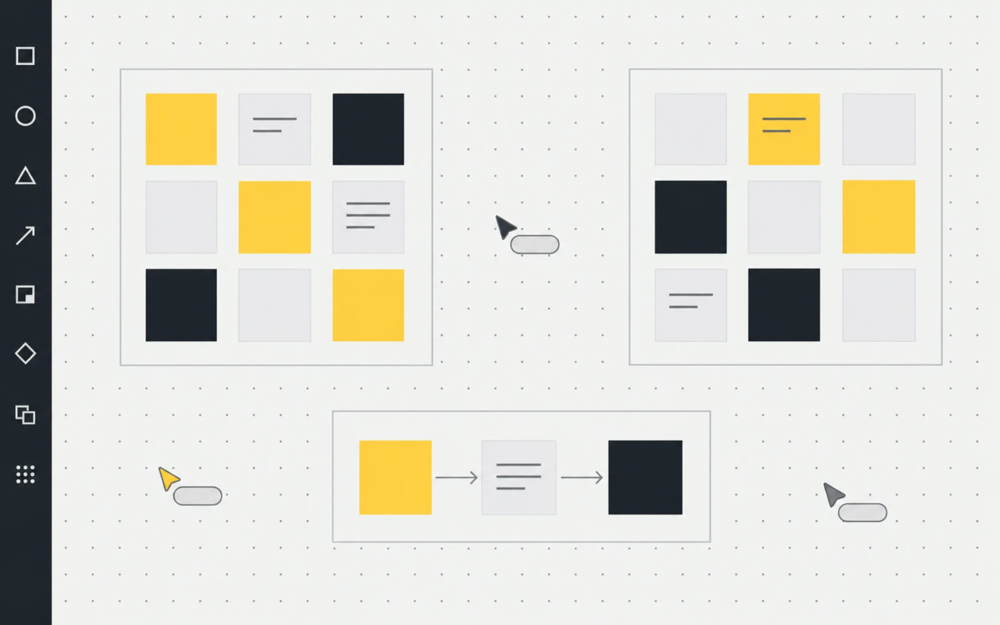
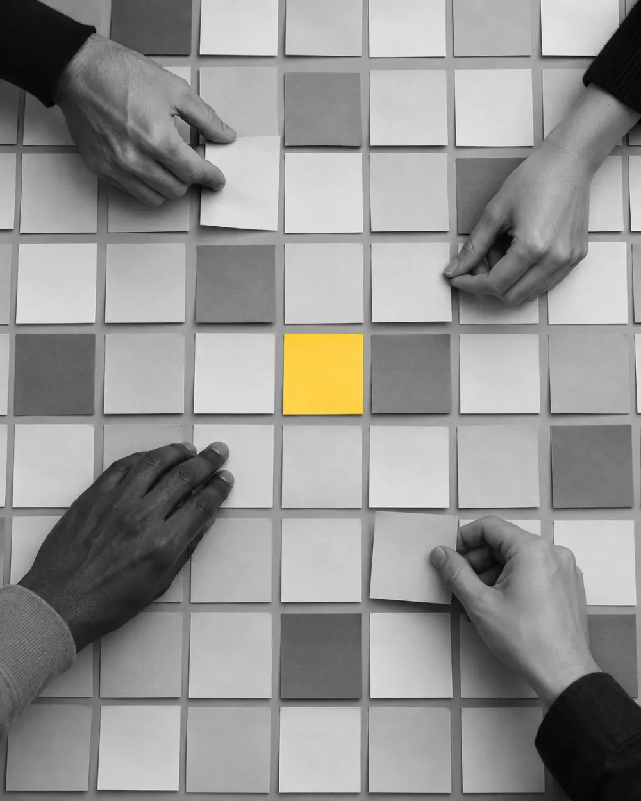
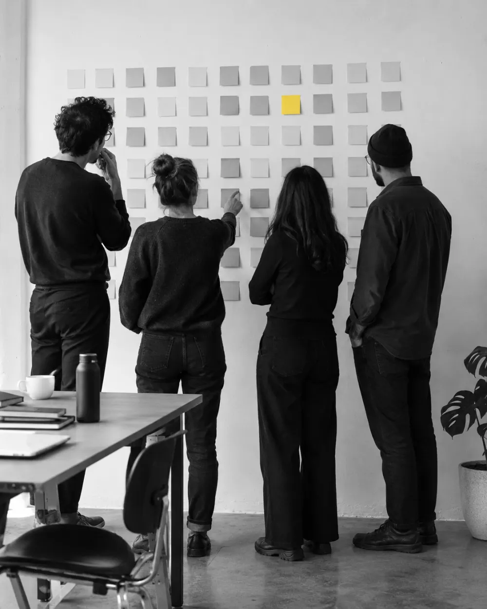
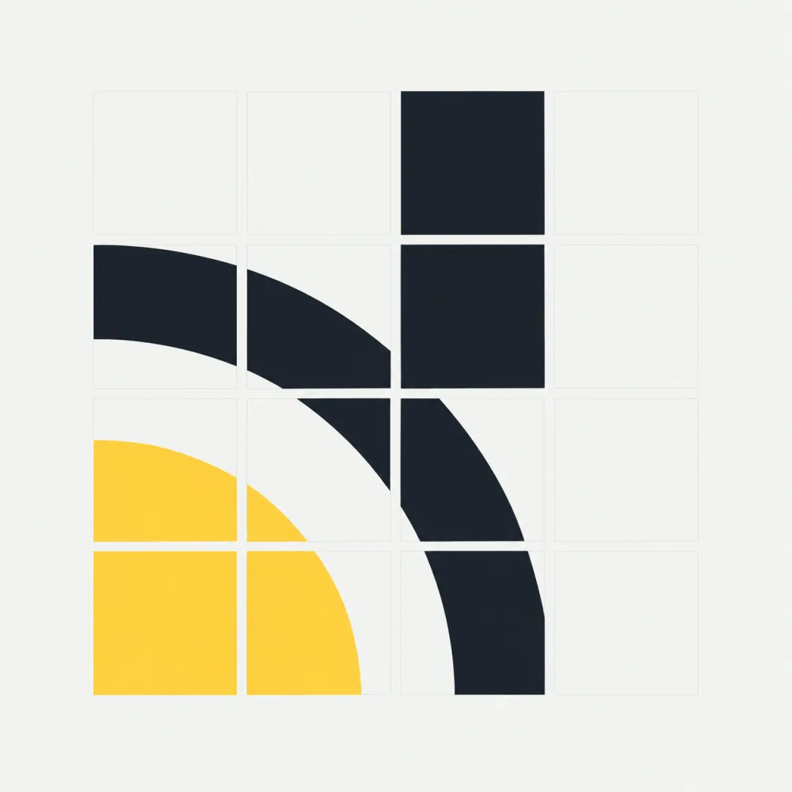

One board.Every voice.No lag.
Tabula is an infinite whiteboard for teams. Sticky notes, connectors and facilitated sessions, kept in your browser first and synced live when you are online.

Built for the room, not the file.
Everything a workshop needs sits on the same canvas.
Notes, shapes, connectors
Sticky notes and shapes snap to a grid. Connectors stay attached when you move things. UML and flowchart shapes, icons, and Mermaid import for diagrams you already have.
CanvasFacilitated sessions
Run a workshop in steps with timers. Write privately, with notes hidden until the reveal. Then dot vote, run a poll, and discuss in comment threads.
SessionsLive presence
See cursors, selections and who is on the board. Changes merge cleanly when someone returns from a train tunnel.
SyncTeams and roles
Workspaces with owners, admins, members and guests. Per board, people can edit, comment or view. Sign in with an email link.
WorkspacesFive themes
Default, Ayu, Kanagawa, Matrix and Evergreen. Pick the one you can stare at for a long retro.
ThemesQuiet first, loud later.
Private writing means the loudest person does not set the agenda. Everyone adds notes alone, then the facilitator reveals them at once.

Your board opens before the network does.
Every board lives in your browser first and works offline.
A small relay syncs cursors, selections and presence when it can be reached, and merges everything later when it cannot. No spinner between you and your thinking.

- Local first
- Boards save to your browser.
- Live relay
- Cursors, selections and presence.
- Merge later
- Offline edits join when you reconnect.
Start from a format that works.
Fourteen templates for retros, planning and discovery.
- Start / Stop / ContinueRetrospective
- 4LsRetrospective
- Mad / Sad / GladRetrospective

- SailboatRetrospective
- Crazy 8sIdeation
- Brainstorm + affinity mapIdeation
- Lean CoffeeDiscussion
- Impact / Effort matrixPrioritisation
- MoSCoWPrioritisation
- User story mapPlanning
- Customer journey mapDiscovery
- Empathy mapDiscovery
- SWOTStrategy
- Pre-mortemRisk
Simple, per seat.
Host it yourself for nothing, or let us run it.
Hosted, monthly
Billed monthly. Your workspace at your-team.gettabula.app.
Hosted, yearly
Two months free compared with paying monthly.